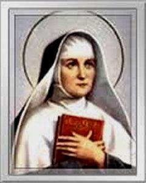
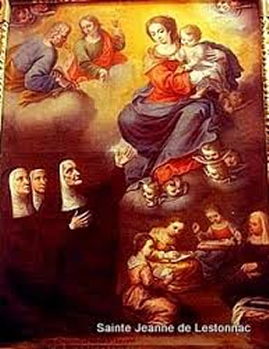
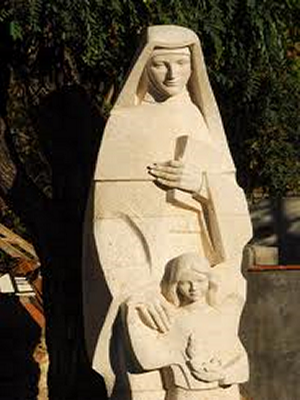
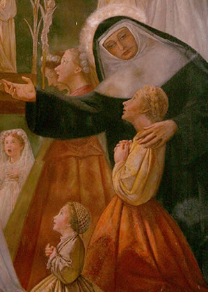
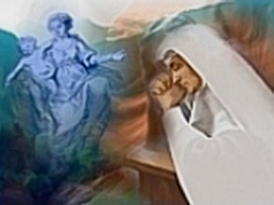

O CHAMADO DE DEUS
EXPERIÊNCIA CISTERCIENSE
E foi rezando que lhe surgiu uma idéia especial, e ela
concebeu a possibilidade de entrar num Convento da Ordem 
Assim, seis anos depois da morte do seu esposo, tendo o seu filho Francisco se casado e suas filhas Marta e Madalena se consagrado a DEUS na vida religiosa, entrando na Irmandade das Anunciadas em Bordeaux, decidiu deixar a filha mais nova, Joaninha, sob os cuidados de Francisco e da esposa dele, e ingressou no Convento.
Na época de seguir para Toulouse, ela disse ao seu filho Francisco: “Filho, o mundo não merece o nosso apego. Ele aviva as nossas ilusões para depois traí-las. A Divina Providência me abre agora um novo caminho”.
O preço maior desta entrega era a separação de seus dois filhos: Francisco e Joaninha, porque viviam a seu lado, e como é natural, a convivência cotidiana enraíza muito mais o verdadeiro amor. As filhas Marta e Madalena, como já mencionamos, faziam parte da Comunidade das Anunciadas, não residiam mais junto da mãe, e por essa razão, a presença delas não era tão sentida. Mas, sem dúvida, sabemos que o afastamento do lar sempre é doloroso e Joana estava vivendo esta realidade: “somente a força da união com o SENHOR, em face do Convite Divino, é que garantia o SIM de sua resposta ao novo projeto, afastando-se de seus filhos”.
No dia da sua partida, saiu muito cedo do palácio com o objetivo de evitar as despedidas, porém, seu coração de mãe ainda teve de enfrentar mais um doloroso sacrifício: Joana foi surpreendida com a chegada de Joaninha, a sua filha mais nova, que se lançou em seus braços com os olhos repletos de lágrimas suplicando-lhe que não se afastasse de Bordeaux. Mas a decisão era definitiva. Com carinho, mas esmagada por uma dor cruel que apertava o seu coração, disse algumas consoladoras palavras tranquilizando a filha, e seguiu viagem de barco, pelo Rio Garona para o Mosteiro Cisterciense em Toulouse.
Estava com 46 anos de idade quando ingressou no Mosteiro. Mudou o seu nome para Joana de São Bernardo, em homenagem ao fundador da Ordem Cisterciense, São Bernardo de Claraval, e desde o início, seguiu fervorosamente o cotidiano da Ordem Religiosa. Este ramo feminino da Ordem Cisterciense nasceu na Abadia de Feuillant, na Gasconha, para reagir à decadência da Ordem, em face da Reforma Protestante.
Estava feliz com a sua nova vida e se dedicava com amor total. Eram longas horas de oração e de muita penitência, num ambiente de total silêncio e abnegação em todos os momentos. Havia uma paz infinita e absoluta. E por isso, cresceu nela um profundo e fervoroso desejo de entregar a sua vida totalmente a DEUS. Mas o seu corpo não estava preparado para uma aplicação física tão profunda, porque era fraco e não tinha condições de competir com a força admirável do seu espírito. Tornou-se evidente que fisicamente ela não suportaria tanta penitência, a qual ela mesma tinha o desejo de fazer. Foram seis meses de difíceis lições, as quais lhe confidenciaram a realidade dos fatos e a consequente solução para a sua vida: ela devia desistir do Mosteiro e encontrar outro caminho...
A certeza desta realidade aconteceu, quando o médico que atendia as Irmãs do Mosteiro, vendo o seu caso, foi sincero e lhe repetiu o que ela mesma já sabia: “Devia procurar outro caminho”.
O que na verdade aconteceu a Joana no Mosteiro, era o reflexo de sua ardorosa intenção de buscar maior santidade em todos os seus atos, se impondo a si mesma, rigorosas e constantes penitências, que abalaram a sua resistência física, mostrando uma palidez facial que preocupou profundamente a Comunidade Religiosa. E tudo isto ocorreu em seis meses, depois de ter vestido o hábito cisterciense. A Madre Superiora compreendendo que Joana não estava habituada e nem preparada a suportar tamanha severidade nas práticas penitenciais, as quais aparentemente conseguiram esgotar completamente as suas forças, convidou-a para uma conversa e depois de argumentar longamente, Joana foi convencida a regressar ao seu Castelo em Bordeaux.
EM BUSCA DE NOVO CAMINHO
Naquela mesma noite, deitada na cama, sem conseguir
dormir pensava em todos os acontecimentos e se esforçava 
Assim que deixou o Mosteiro, se retirou para o Castelo em Bordeaux, onde procurou organizar as idéias com o objetivo de delinear os contornos de um projeto no qual pudesse atuar decididamente e que fosse eficaz. Mas a família queria “matar as saudades” e não lhe ofereciam tempo para rezar e organizar o seu ideal. Então, decidiu ir para o Castelo de Mothe, sua antiga propriedade. Lá, o silencio e o tempo necessário as orações a colocaram num profundo encontro com DEUS, podendo idealizar as características de um plano, que pouco a pouco se foi delineando em sua mente, tomando forma e se tornando mais claro. Ela imaginou “constituir uma Ordem Religiosa desconhecida na Igreja”.
1 – Que oferecesse as jovens desejosas de servir ao SENHOR, uma Comunidade com um estilo de vida contemplativo-apostólico que não destruísse as suas forças físicas.
2 – Abrir Escolas, que sob a proteção de MARIA NOSSA SENHORA, estendesse o seu Nome e a sua influência na juventude feminina que quisesse ser educada nela.
Em Dezembro de 1605, já se encontrava novamente no Castelo em Bordeaux e trabalhava como voluntária em companhia de outras senhoras e moças, durante uma terrível epidemia de peste que se lastrou naquela região, e então, ela sentiu que ali estava a sua vocação: realizar um trabalho abrangente e decidido na sociedade, visando primordialmente às jovens mais necessitadas de ajuda e de instrução. E desse modo começou a sua obra, visitando e cuidando das pessoas nas regiões mais pobres da cidade, ao mesmo tempo em que mantinha contato com as jovens que eram atraídas pelo chamado de DEUS e pela sua própria personalidade cativante, realizando um serviço apostólico que ela sonhara em realizar e que na verdade estava contido na espiritualidade Inaciana, que ela amava e respeitava, considerando que aquela espiritualidade expressava a sua espiritualidade pessoal.
QUER FUNDAR UMA ORDEM RELIGIOSA
Manteve contatos e foi em busca dos conselhos de dois Padres
Jesuítas, Juan de Bordes e Francisco Raymond, 
Joana, também teve em seu irmão, Padre Jerônimo de Lestonnac SJ, uma excepcional colaboração, primordialmente porque ele sabia e conhecia a fundo, as inquietações dela e as suas qualidades. Conhecendo o seu projeto, intermediou em dezenas de oportunidades junto aos outros dois Padres e a outras autoridades religiosas, visando à troca de sugestões e de idéias, assim como, realizando providências necessárias ao enraizamento do empreendimento.
À medida que a noticia era divulgada, o SENHOR DEUS ajudava, encaminhando algumas mulheres que tinham o desejo de colaborar e foram atraídas pela notícia. E assim também, Joana convidou outras pessoas a participar do grupo, no sentido de que o esforço em conjunto gerasse benefício para o Instituto em formação e para o engrandecimento interior de cada uma delas.
Na primeira reunião Joana disse estas palavras: “Minhas filhas, somente DEUS poderia inspirar cada uma de vocês ter o desejo de se oferecerem a me ajudar neste grandioso empreendimento. Espero que o sentimento que une os nossos corações para o mesmo objetivo, nos conduza a concretização do nosso ideal. Deste modo, é necessário que colaborem comigo na formação de uma Companhia de Jovens dispostas a lutar na Milícia de DEUS. Vocês já conhecem e sabem, da desordem que tem causado a ignorância religiosa. Sou testemunha desta desgraça, da qual fui preservada por um singular favor Divino. Assim, queridas irmãs, UNAMOS AS NOSSAS FORÇAS em proveito da Igreja, na medida em que sejamos capazes de enfrentar as adversidades”.
No passo seguinte, ela fez diligência para conseguir a aprovação do senhor Cardeal François d’Escoubleau de Sourdis, que era o Arcebispo de Bordeaux, e que não estava disposto a concedê-la, porque ele preferia que Joana colaborasse com a reforma da Congregação das Ursulinas. O Cardeal, que inicialmente era o protetor e incentivador da Obra de Joana, agora queria ligá-la a Ordem Religiosa das Ursulinas, e por essa razão, negou e não autorizou que as jovens candidatas à COMPANHIA DE MARIA, fizessem a profissão de fé em Maio de 1610. Mas Joana não concordou, porque os objetivos e carismas das duas entidades eram totalmente diferentes. E por isso, manteve-se firme, serena e humilde, querendo a aprovação do seu Instituto.
Joana que tinha uma grande devoção a Eucaristia, a SANTÍSSIMA VIRGEM MARIA - a quem consagrou o seu Instituto - e que tributava um culto muito especial ao seu Anjo da Guarda, companheiro inseparável em todos os momentos da sua existência, também era a mãe caridosa e boa que distribuía aos mais necessitados os remédios adquiridos para a Comunidade, da mesma forma que se empenhava em ensinar com fervor, constituindo-se num precioso e eficiente modelo, para a nascente Comunidade que enfrentava muitos problemas.
No dia 7 de dezembro, em seu castelo de Lormont, recebeu uma graça particular da SANTÍSSIMA VIRGEM que advogava em favor de suas filhas, e assim, na festividade da IMACULADA CONCEIÇÃO, dia 8 de Dezembro, no Mosteiro da Companhia de MARIA, se concretizou à profissão de fé da fundadora e das suas primeiras companheiras, que já eram nove.
Os objetivos da COMPANHIA DE MARIA podem ser definidos da seguinte forma:
1 - Educar as jovens na fé cristã.
2 - Estimular a Devoção e Imitação de NOSSA SENHORA.
3 - Deixar ao alcance de todas as mulheres um estilo de vida religioso apostólico possível a todos os tipos de pessoas.
Eram
realizações que iam oferecer ao mundo um serviço novo em seu estilo e
perfeitamente válido por sua resposta a 
Joana de Lestonnac animada e consciente de que a Vontade de DEUS estava sendo realizada através do esforço humano, suplicou o auxílio do Padre de Bordes, para lhe ajudar a completar o Regulamento do Instituto, o qual foi concluído com trinta Cláusulas, as quais serviram de guia a vida da nova Comunidade. Este Regulamento foi apresentado ao Cardeal no dia 7 de Março de 1606 pedindo a aprovação.
A espera foi angustiante e nervosa, porque o Cardeal tinha outras idéias. Então, Joana e suas companheiras rezaram muito e entregaram tudo nas mãos de DEUS. No dia 25 de Março o Arcebispo de Bordeaux lhes anunciou a aprovação, e a alegria invadiu o coração de Joana e de suas filhas religiosas.
Agora o próximo passo era encaminhar o Estatuto da Companhia a Roma. Joana escolheu o sacerdote Padre Moysset, que era de sua inteira confiança. Ele se apresentou diante do Papa levando uma carta de recomendação que elogiava o grupo e sua fundadora. E assim, o Estatuto da Organização foi conduzido ao Papa Paulo V, que aprovou a fundação do Instituto no dia 7 de abril de 1607. A COMPANHIA DE MARIA NOSSA SENHORA foi à primeira Ordem Religiosa de mulheres dedicadas ao magistério, aprovada pela Igreja. Nasceu assim, uma Ordem Religiosa com a intenção de estabelecer uma nova era, em face das suas características, que verdadeiramente a diferenciava das Ordens Religiosas femininas tradicionais. Um novo estilo de vida religiosa com espiritualidade Inaciana (de Santo Inácio de Loyola).
Interiormente seguindo a Vontade de DEUS, Joana se esforçava vigorosamente em habituar a transformar os acontecimentos do cotidiano, principalmente aqueles que não eram muito alegres, num processo de crescimento interior e de autodoação, ou seja, “manter a chama acesa” do ideal e da caridade cristã, e sempre “estender a mão” aos que necessitavam ou para conceder o perdão. Um santo projeto de vida baseado no Evangelho de NOSSO SENHOR JESUS CRISTO e inspirado nos procedimentos de NOSSA SENHORA, a MÃE DE DEUS.
No dia 11 de março de 1608, a cidade de Bordeaux foi festivamente ornada para celebrar a generosa resposta das cinco primeiras companheiras de Joana, que naquela data receberam o hábito religioso, tornando-se os primeiros membros da COMPANHIA DE MARIA.
E finalizando a legalização oficial do INSTITUTO DE NOSSA SENHORA, o Rei da França Enrique IV, por intercessão da Rainha Maria de Médici, aprovou o Estatuto da Ordem Religiosa em 27 de Agosto de 1609, por Carta Patente, registrada no Parlamento de Bordeaux.
AS COMPANHEIRAS DE TRABALHO E A INVEJA DOS OUTROS
As primeiras mulheres que logo aderiram ao chamado Divino
através de Joana, foram: Serena Coqueau, 
Mas como em todas as obras de DEUS, Joana sofreu um forte vendaval de perseguições e de calúnias. A inveja e o desejo de ficar em evidência, levaram algumas pessoas a mentir e tecer intrigas, com o objetivo de afastá-la do comando da Casa da Ordem em Bordeaux. Foi um período triste e repleto de angústias, mas que ela soube resistir, porque estava amparada pela própria VIRGEM MARIA. Na verdade, antes dela concluir a sua missão terrestre como fundadora e animadora da Ordem Religiosa, e de sua alma voar para o Céu, já tinham sido edificadas e se encontravam em permanente atividade, quarenta Casas da COMPANHIA DE MARIA, NOSSA SENHORA.
As decepções foram muitas: Joana enfrentou os desprezos de Lucia de Teula, a fundadora da Casa de Toulouse, que não lhe poupou insultos e perseguições, assim como a traição de uma de suas próprias filhas, a única infiel no grupo de suas primeiras religiosas, que cedendo a uma tentação ambiciosa, que lhe abriria possibilidades vantajosas, arquitetou falsas acusações contra Joana, junto às autoridades religiosas.
Mais tarde, a Santa fundadora repetia para as suas filhas: "A parte que JESUS nos dá de sua Cruz nos faz conhecer o quanto ELE nos ama".
Mas as intrigas e os conluios maldosos não cessavam e eram tantos, que em 1622, lhe retiraram o cargo e ela deixou Bordeaux. Entretanto, as outras Casas continuaram a lhe dedicar toda estima, o respeito, o afeto e a confiança devidos à Fundadora da Ordem. Ela continuou sendo considerada a Madre Geral da Companhia de MARIA, mesmo que esta prerrogativa lhe tenha sido recusada pela Igreja, e também, não lhe foi permitido se comunicar com as outras Casas da Ordem, naquele terrível período de sua vida.
A CASA DA PEQUENA CIDADE DE “PAU”
Amadurecida pela idade e com a saúde desgastada pelas decepções, não cessou com o apostolado e foi fundar outra Casa da Ordem na pequena cidade francesa de Pau. Trabalhando intensamente ali permaneceu até o ano de 1634, organizando a Casa, administrando todas as atividades e exercendo um profícuo e perseverante magistério, ensinando sua experiência de vida as meninas mais pobres. O tempo que sobrava, no intervalo de suas constantes e sábias providências, permanecia em silêncio ou em orações, deixando admirados todos os que tiveram a oportunidade de contemplá-la.
Por outro lado, em Bordeaux, no fim do seu mandato como Superiora da Ordem, em 1626, a Superiora Ingrata, Lucia de Teula, reconheceu os seus erros e pediu publicamente perdão a Joana de Lestonnac.